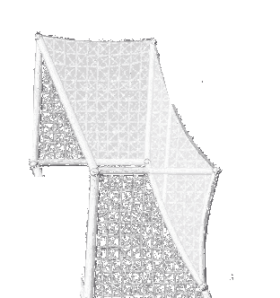
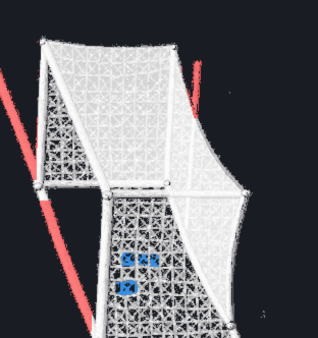
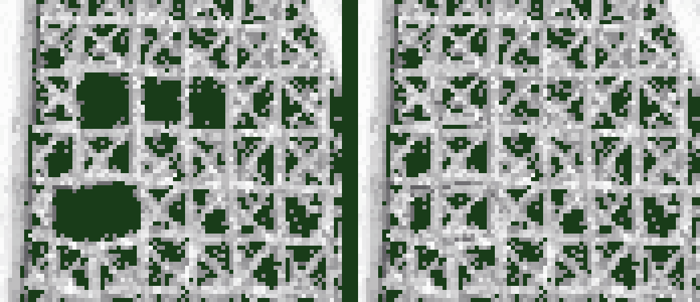
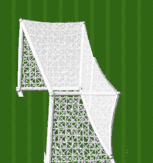

Comparison fixture only — nothing here is integrated; the sandbox still renders procedural Goal V3. V2 is the accepted visual master. V2.2 = surgical repair only: 3,246 px changed of 103,584 (3.1%) — pole/stub cleared to transparency (2,819 px), four net tears filled by cloning the intact cell row above (427 px added into transparent gaps; zero existing art pixels modified). Everything else verified pixel-identical. 0 PixelLab generations. V2.1 rejected (kept as experiment only).



